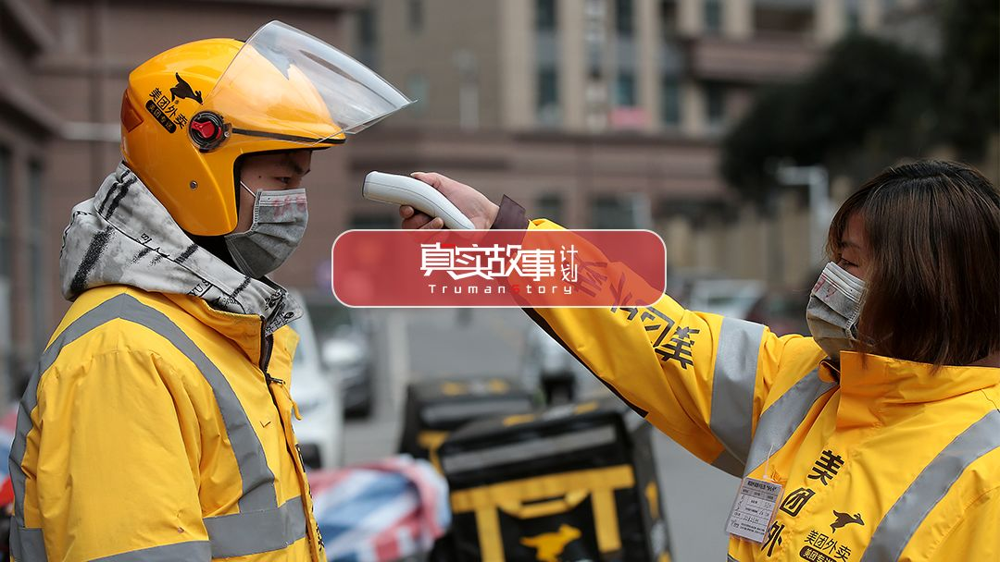
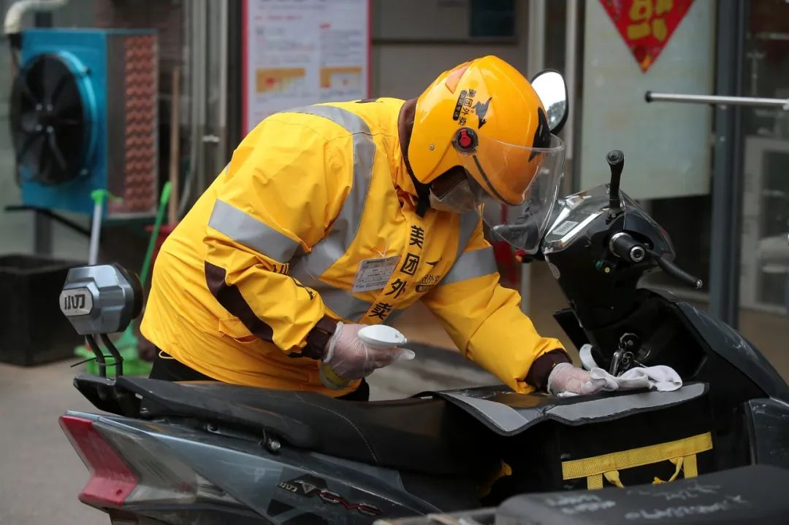
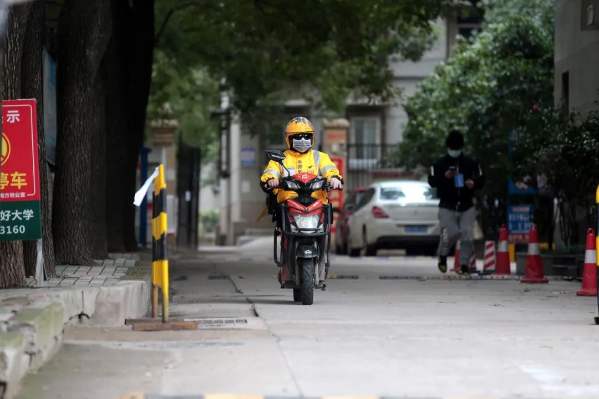
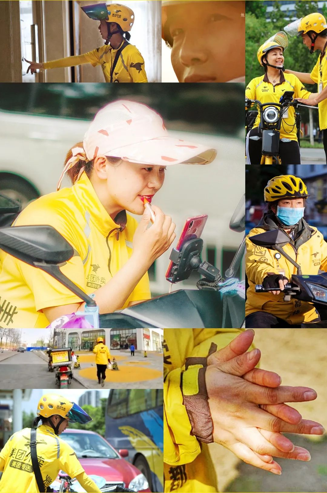

武汉外卖小哥：害怕是正常的，但我希望自己一直是冷静的
原文链接 备份链接 ** 在武汉这座几乎停摆的城市里，一群外卖小哥和他们背后的团队还在正常运转。他们需要每天前往收治新冠肺炎的定点医院，给一线医护人员送餐，是连接这座城市的动线。这项“医护关爱计划”，是在1月26日开始的，饿了么联 …

在武汉送外卖的女骑手多数在三四十岁，有的女儿和王紫薇一般大，她们在疫情中穿梭街巷，送餐食送急用物资。生于1995年的王紫薇说，戴上口罩，跨上电动车，就听不到别人问“女孩子怎么出来送外卖”。

二月中旬，骑手王紫薇到商家取餐时遇到一件小事。一个自称是同济医院医生的中年男人来买东西，在大门口看到她。“外面这么危险，你一个女孩子，怎么还出来跑外卖”，他语气严厉，“不要为了钱这么拼命！”
她没回话，拿上餐走了。她有点懵，不知该说什么。她突然想起有一天，自己在路上跑，陆续和四五个女骑手交错而过时，也感到意外：疫情这么严重，怎么她们也出门干活？现在她觉得，有什么差别呢，戴上头盔，跨上电动车，就听不到别人问“女孩子怎么出来送外卖”。
回想起来，警报早就拉响。王紫薇记得去年12月底的一天，一个客户下单了很多口罩和板蓝根。她赶到药店，发现这两样东西瞬间卖空了。她翻手机，留意到不少华南海鲜市场传出肺炎感染的消息。当天下午她请了个假，回家路上跑好几家药店，买到几袋医用口罩和板蓝根。
这事没头没尾地过去了，没有后续消息。人们紧张了两天，又摘下口罩。等到再次慌张，都快过年了。
1月23日一早，王紫薇睁眼就看到手机上的封城消息，一下子清醒过来。就在前一天晚上，她还和好久不见的闺蜜相约，下班后聚一聚。有那么严重吗？她错愕。没过几天，她出门上班，看到家附近的大路口都被封上了。街上一个人都没有，像一座“空城”。
王紫薇骑车奔驰，好像整条路都是自己的。武汉的马路静悄悄。路上只剩运送物资的货车和穿梭的外卖骑手。救护车比以往多了许多，呼啸而过，急迫的笛音穿过街道，听得人心里凄凉。
有一天早上，王紫薇往一个老小区送单，爬上二楼，刚把东西放到客人家门口，扭头就看见旁边门洞走下来几个人，抬着一副担架。她吓坏了，一溜烟窜下来，车也来不及骑，一口气跑到老远。她远远看着，等那辆白色的面包车开走有一会儿了，才走回来，用消毒水把整辆车仔仔细细擦了一遍。

图|女骑手给自己的爱车消毒
整整一天，那个画面在她脑海里挥之不去。没想到第二天，她又碰上了住宅楼下停着黑车。她掉头退到马路边，给客户打电话，说楼下有“那种车”，等车走了立刻给您送过去。对方立刻明白了。他说，没事，你路上小心。
王紫薇有点害怕了。她在工作群里问：“碰上这个，是不是不大好啊？”同事们你一言我一语地开起玩笑。她心情就好转过来，不那么忧心忡忡了。
在她所在的美团武汉利济路站点，还在岗位上的十位骑手里，王紫薇是唯一的女孩。其他骑手大多三四十岁，年纪大点儿的，孩子都跟她一般大了。她是站里的妹妹。

1985年生的刘俊平是站里的姐姐，她是美团武汉武昌火车站站长。站里的骑手都是年轻小伙子，最小的才19岁。有的管刘俊平叫“刘姐”，有的直接喊“老大”。
过年前，她安排好了值班名单，一切妥当，准备回孝感老家。1月22日，武汉隔日封城的消息在微信群、朋友圈一传十十传百地扩散开。骑手们有些慌了。在站里，家人一个一个打电话过来，急吼吼地喊儿子回家。小伙子接完电话，扭头看她，“老大，怎么搞？”
“你们怕什么？我不是在这儿嘛！“刘俊平不多说废话。她就是这么临时决定留下的。
刘俊平早就开始做准备了。一月起始，华南海鲜市场关闭，抖音和朋友圈传播着吃蝙蝠的视频，还没专家站出来告诉大家，肺炎有可能人传人。刘俊平想，平时没吃那可怕东西，应该没事。不过，她没有放松警惕。刘俊平在家里是长女，从小带弟弟妹妹，惯于操心。站里几十号弟兄，她不敢掉以轻心。她跑药店买了好些板蓝根、84消毒液和消毒酒精。板蓝根挑的可是最贵的。
她要求骑手每天回站点必须喝两包板蓝根，说是为了“祛寒防感冒”。不管有没有用，聊胜于无。半大小伙子大大咧咧，脑子里缺根弦。刘俊平天天盯着。你头盔一摘，她冲好的热腾腾的药就递到跟前，逼着喝。
那是一个多月前站里的场景了。很快，情况严峻起来，每个人都自觉得很，量体温、戴口罩、爱心卡，一步不落。
1月23日封城后，没过两天，全市禁止机动车出行。刘俊平开车出去，街面空无一人，“好像空城”。
她是做志愿者送物资去的。参与志愿服务是件无需考虑的事情，她有车有驾照，力所能及的事，自然而然就做了。喜欢越野的弟弟把她拉进一个志愿车队群，她一看，三百多号人。用车信息时不时就甩进群里，有时候是接送医护人员，有时候是运捐助物资，后来还帮助送孕妇产检。一条消息丢过来，地点明确，附近的司机立即出动。
刘俊平运过口罩和两箱防护服。车开到高速服务区，把物资搬进后备箱，往集中分配点运。她看到一箱箱物资汇聚起来，堆成山，工作人员一一贴上标签，这个社区，那个医院。好像全国的希望都凝聚过来。

王紫薇1995年生，武汉本地人。家里五口人，奶奶，爸爸妈妈，还有一个妹妹。在成为骑手之前，她做文职，天天在办公室坐着。那是一份机械静态的工作。每天领导发下文件，她整理归档，剩下的时间就是呆坐，百无聊赖地上网冲浪，等待下班。文职工作薪水低，下班后和闺蜜们吃饭逛街，护肤化妆的瓶瓶罐罐买一买，几乎每月月光。
去年某一天，王紫薇的工资又花光了。她想管父母要点，但没好意思开口。窘迫刺激她开始反思。进入社会已经两三年了，怎么还像个小孩子，就知道玩，手头没一点积蓄。她突然担心自己就这么懒洋洋地把时间消磨下去。
改变从身体开始。王紫薇有点胖。她看到邻居减重70斤的成果，决定开始减肥。这需要高度自律。早餐她吃一只鸡蛋加一杯酸奶。每天午饭，她用家里最小的碗，盛一点米饭，盖上菜铺平。晚餐比这还少一点。此外，她坚持敷中药包。王紫薇克制自己的食欲，连续两三个月没有吃一顿火锅。一个秋天过去，她从160斤瘦到了130斤。
去年11月，她在网上看到美团招聘骑手，工资很不错。她猜想这个工作很辛苦，正好可以锻炼自己。
骑手排班分为早中晚，出于安全考虑，站里不让女孩跑晚班。王紫薇一开始跑中班，每天快十点上线送餐。大半个月后，她摸到了规律，中午午饭时间和下午六七点的晚饭时间，所有骑手都上线，很难排到单。想比别人跑得多，必须在非饭点更加勤奋。于是她开始跑早班，七点出门，扣除吃饭时间，每天将近12小时都在路上。
站里的另一个女骑手同样勤奋。老同志说，你们两个女孩比男子还凶。

图|刘俊平在送餐路上
除了每个月的生理期，她很少休息。一个月跑下来，她挣的钱比原先坐办公室翻了一番。那是对她努力的犒赏。
骑手工作彻头彻尾地改变了她的生活。她没有时间再和闺蜜逛街聚餐了。每天头盔一戴，化妆也没必要了，不知不觉省下一笔化妆品开支。以前的生活空虚，下班回家就上线《绝地求生》，吃鸡消磨时间。现在呢？到家累得恨不得倒头就睡。不过，这么东奔西跑，不多吃点儿路上饿得慌，减肥计划因此暂时搁置。可因为体力劳动消耗大，体重竟也没有反弹多少。
王紫薇满意这样的状态，健康，有活力。她感到充实。

刘俊平干这行的原因，就比较好笑了。她严重路痴。
原先她在仙桃做销售，在行业里扎根多年，已经干到了销售经理。两年半前，刘俊平遇上些打击，心一横，工作也辞了，人也离开了。弟弟把她接到武汉散心。
刘俊平在小区住了大半个月，天天只会走南门。有一天吃完海底捞，弟弟开车把她送到北门。她懵了，只好凭着模糊的印象，沿一个方向走啊走，从北门进去，又从南门穿出，不知不觉往反方向走出五公里。
点外卖时，刘俊平看到APP上有地图导航，觉得送外卖正好可以认路，于是投简历应聘骑手。这工作吧，“至少不会把自己整丢”。
刘俊平是军人的女儿，她不怕吃苦。
她永远记得，成为骑手的第二天，她接到订单，农夫山泉28瓶矿泉水，整整两箱。配送地点在老式楼房的7楼，没有电梯。她在楼下给客人打电话求助，接电话的是个老人，家里只有一个小孩。她咬咬牙，扛了一箱爬上七楼，又下来再扛一箱。
隔天起来，刘俊平浑身酸痛，往窗外一看，大暴雨。她真不想动，可站里人手不够，她又冒雨上了。一天下来筋疲力竭。她随手刷了下手机上的骑手排行榜，居然跃居第二。小星标在榜单上闪着，可真好看啊。动力突然来了，她盯着第一名的紫色星星，心想，早晚给它摘下来。
排名第一的单王是个和他同龄的男人，家里负债，一天跑三个班。他的那辆电动车，车后箱装满，两大罐怡宝矿泉水堆在前面，车把手还挂两袋包子，随时载得满满当当。为了跑赢他，刘俊平拼了命。人家休息，她也不停，一天十几个小时地跑。一个多月后，她的排名刷到了第一。
完成目标的感觉就一个字——爽。

图|刘俊平干起活来从不服输
刘俊平性格爽快，跟站里的男骑手们称兄道弟。她做事利索，业绩突出，很快当了组长，后来又升到站长。站里的女孩不多，但个个做得很好。刘俊平发现，虽然体力不如男孩，但姑娘们做事认真，也更有恒心。她们的沟通能力更强，很少接到客户投诉。
有个女站长是幸运的，你随时能感受到她的贴心。刘俊平在站里给女孩备着红糖和暖宫贴。男孩们下了班，想打会儿游戏，她也陪着玩，输的那个人永远是她。她就住在办公室后的小房子里，每天晚上，骑手们赖着聊天，聊得忘记时间，非得她赶人才散。
刘俊平就是有这个本事，把几十号骑手拢得像一家人。像在家一样，她还是那个让人信任的大姐，无论男骑手、女骑手，都愿意跟她聊天，家里有事也找她诉苦，和女朋友吵架也找她调解。

临近过年，站里安排加班，王紫薇不想在家闷着无聊，立刻答应了。谁能想到，新冠肺炎疫情就跟天上砸下来似的，突然改变了一切。有一些年纪大的骑手，家里孩子不让出门，只能请假。人手更紧张了。
王紫薇照常上班，几乎没有过犹豫。她的想法很简单，答应好的事就得做到。
1月27号那天晚上回到家，王紫薇有点头痛，她的鼻子塞住了，声音也变得嘶哑。她有点担心，跟站长请了两天假。所幸只是普通的伤风感冒，很快就康复了。第三天一早，她照常下楼骑车。一摸荷包，钥匙不见了。她给家里打电话，妈妈这才“招供”，钥匙被她藏起来了，不许她出门上班。
王紫薇没有孩子气地大吵大闹。她好好跟妈妈讲，站里就这么些人手，每个人都排满了单，她不上，别人就得替她承担。她当着妈妈面给站长打电话，一番安抚保证，总算劝说妈妈交出了车钥匙。
王紫薇可以理解妈妈的担忧。也许每天从她踏出家门那秒开始，妈妈的心就提起来了。她不敢给女儿打电话，怕影响她骑车，又惴惴不安。每天下午两点左右，王紫薇会接到家里的电话。可能打这个电话之前，她妈妈已经忍了一上午。
还有一天，王紫薇突然接到婶婶的电话，听说她在跑单，劈头盖脸一顿骂，“这个时候你还往外跑，家里还有个老奶奶”。王紫薇压力很大。事实上，90多岁的奶奶，她一直挂在心上。她极其谨慎，除了戴好口罩，每送完一单，她都会挤一点免洗的消毒洗手液清洗双手。她在家门外放了一瓶消毒水，进门前总要全身上下喷一遍。为了把手够不着的后背也消毒，她像喷香水那样，将消毒水喷在空中，在洒落的喷雾里转圈。
刘俊平不敢让老家的老母亲知道，她还在上班，每次打电话都连哄带骗。她已经很久没见到女儿了。女儿和孩子爸在仙桃，原本答应好过年接她回孝感老家，这下又食言了。孩子十岁了，在电话里哭闹，她在电话这头哄。
晚上收完工，骑手们都散了。刘俊平会走出来，在门口站一会儿。原本嘈杂的人声、烧烤摊烟熏火燎的味道，统统没了。她突然觉得凄凉。这个城市也太安静了。

图|送外卖的女人总能给人力量

二月初有一天，王紫薇接到送往武广一所小学的单子，送的是良品铺子的一大袋零食。她取完餐，往学校骑，路上接到了客户的电话。“我是武汉会展中心方舱医院的医生”，电话里是位男士，他说，“你别慌。你不用来医院，就放到学校门口。学校离我们这儿只隔着一条街，我们的人过去拿就行。你放心，我们出来的时候，全身都消毒了。不会带出病毒”。
医生的语气很镇定。他说不用担心，王紫薇就真的放心了。
学校大门紧闭，一位女士骑着自行车出现了，王紫薇向她招手，自行车默契地隔着几米停下。王紫薇大声跟她确认了手机尾号，把袋子放到门卫室前的地上，骑着电动车退开。女士才上前取东西，挥手向她致谢。
能给医护人员送东西，王紫薇挺高兴的。她每天看疫情动态，好像关注着医生护士们在前线的战况。她的表姐就是一位一线护士。表姐已经一个多月没有回家了，住在医院安排的隔离宾馆。王紫薇每天下班后都要跟她聊几句，问一问她人好不好。表姐总往好的方面说，让她不用担心。
刘俊平则直接报名参加了医护人员送餐志愿队。防护服和消毒液备在车里，小心翼翼，全副武装。

图|每次送餐都要消毒
有一次跑中南医院跑，给外地援鄂医疗队送餐。她和同事拖着一车一百多份盒饭进医院大门。对面下来几个医护人员，也穿着防护服，一边挥着胳膊阻止他们上前，一边喊：“我们这儿是重灾区，尽量离我们远一点”。他们看着刘俊平把餐品放到大厅分诊台，一直退到玻璃门外，才上前取餐。
刘俊平把防护服脱下扔了，全身消毒后回到站点。一看手机，收到了医疗队主任的好友申请。他说：“辛苦你们，非常感谢”。他还发来一张照片，是刘俊平和同事拖着盒饭进医院的画面。

奔驰的骑手像城市的血管。城市停摆时，居民们被困在家里，骑手们成了唯一连接外界的媒介，他们更重要了。
持续一个多月，刘俊平站里每天送出900多单，兄弟们一天都没有休息。从早跑到晚，连吃饭时间都没有。她买了一批小面包，往他们车箱里塞。时不时她就骑车出门跑单，分担大家压力。可是，她的名字一跳上骑手排行榜，微信群里，兄弟们就炸：“让你别跑别跑，你又跑！”
这种时候，她感到幸福。
在特殊时期，小伙子们突然都长大了，没一个掉链子。有骑手累得不行了，找她请假。她说，“情况你也知道，想休你就休”，说完看着他。请假的人不说话，想了几秒钟，来一句，“不休了”。
有那么几天武汉下大雪，根本无法出行。商家体谅骑手，下午六点多就关闭了平台。刘俊平给骑手们放假，自己跑完剩下的预订单。电动车在雨雪里跑，手套全部打湿，双手冰冷刺骨，很快刘俊平连一点知觉都没有了。她想，再遇到这种天气，骑手们怎么办啊。正好看到一家小卖店还开着门，她赶紧钻进去买手套。以往4块钱一双的厨房橡胶手套，涨价到了10块。她一口气买了十二双。
刘俊平不知道这样辛苦的日子还要撑多久。她买了一个大电饭锅，炖猪蹄汤、鸡汤。骑手们陆续收工，回来一个，喝一碗，喝完就撤。站点里不能聚集。

图|骑手们冒着雨雪出门
王紫薇觉得自己在这一个月长大许多。她做这份工作原本只是想锻炼自己，最近，她真的体会到一种责任感。这种感觉模模糊糊，说不太明白，在这个时候送餐当然是服务于别人，“肯定不是为了自己”。
武汉市的店面几乎都关了，只剩一些水果店和药店还在经营。过年那几天，她送了一单水果。小区完全封锁了，她骑车绕了一圈，到处都是高高的挡板。王紫薇只好给顾客打电话说明情况，请对方退单。过了几分钟，那位阿姨又来了个电话：“算了，餐我也不退了，你们也很辛苦，水果你拿回去吃吧。”
“谢谢阿姨“，王紫薇说，手头还有好些单等着送，她没有时间表达过多的感谢，只对她说了声”祝您新年快乐“。
晚上睡觉前，王紫薇躺在床上看微博信息。方舱医院的病人记录生活；一个姐姐追着拉走母亲遗体的殡仪馆车；一个医院的院长去世了……她常常看得掉眼泪。她在武汉长大，生活了二十多年，从来没见过这座城市变成这个样子。王紫薇甚至怀念起以前送餐路上的堵车。
这几天，一些铺子开了，路上开始能看到零星的车和人。应该是控制住了吧，王紫薇想。气温正在转暖，春天快到了。武汉最近天气不错。
*本文图片来自《现代快报》《北京日报》，已获授权
女性总给人娇弱的印象。突如其来的疫情下，刘俊平、王紫薇和她们的同事经受住了这次大考，蹬着车，在武汉疫区风雨兼程。无需过多的颂扬与优待，她们只是踏踏实实地送外卖，在日复一日的工作中呼吸到自由。
三八妇女节，向这些仍坚守在岗位上的女人们致敬！

-END-
撰文|刘雀

原文链接 备份链接 ** 在武汉这座几乎停摆的城市里，一群外卖小哥和他们背后的团队还在正常运转。他们需要每天前往收治新冠肺炎的定点医院，给一线医护人员送餐，是连接这座城市的动线。这项“医护关爱计划”，是在1月26日开始的，饿了么联 …
原文链接 备份链接 【财新网】（记者 萧辉）武汉封城期间，数百名外卖“骑手”穿梭在大街小巷，为困守在家的武汉市民送餐、送菜、送药和其他一切生活必需品，他们冒着被感染的风险，为武汉城市的运转贡献了一份力，也在这场抗疫战斗中找到了职业荣誉感。 …
原文链接 备份链接 从武汉封城之日起，三十多岁的外卖员老计一直在工作。他穿梭在江城的大街小巷，一边送餐，一边用手机记录下自己看到的一切。 空荡荡的汉街，戏台上有一只狗。沃尔玛的猪肉档人山人海，“我不敢去，也抢不过”。超市的叶子菜卖得快，去 …
原文链接 备份链接 “ 我生活在这个城市，做了自己该做的事。 武汉封城后，这个城市从未如此空旷安静，路上少有车辆，却有一道独特的风景，就是在城市中穿梭的外卖人员。 疫情下，医护人员在一线救治病人，保障我们的生命安全；而我们这些身在武汉的 …
原文链接 备份链接 多年以后，理发师高为谋如果还在干这行，准会想起2020年春天这个特殊的二月二。这一天，他打工的理发店仍旧闭着门，座椅上落满灰，彩虹灯也不亮了，打开微博，呼唤“Tony老师”的声音遍地都是。 而他，正在南京的街头送外卖。 …